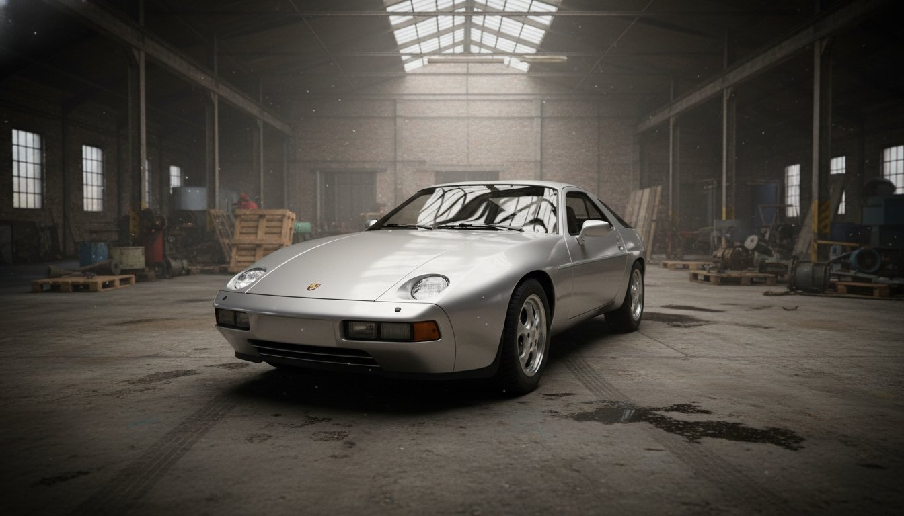
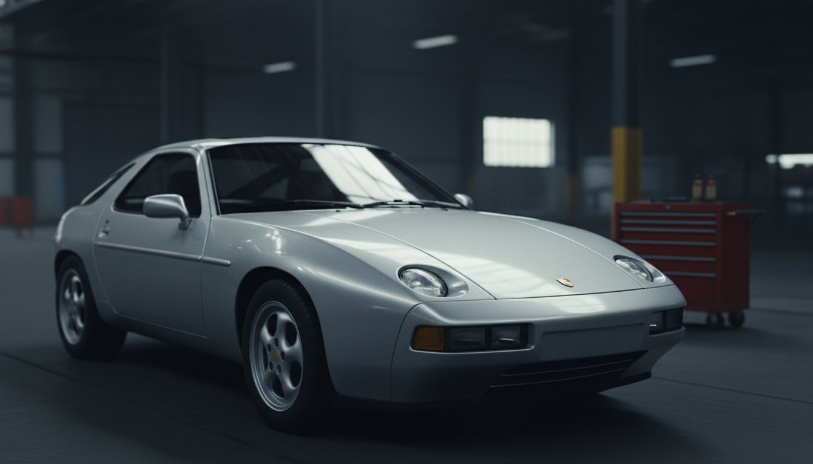
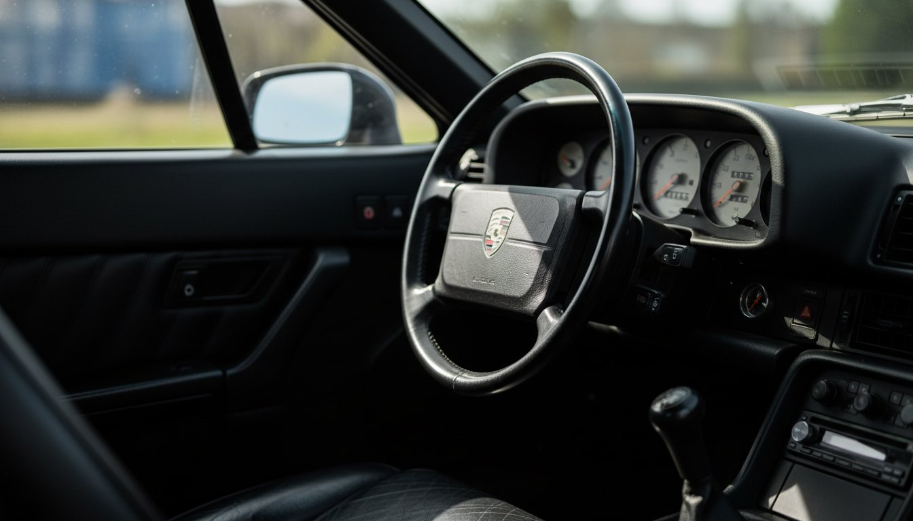

The 928 was supposed to replace the 911. Instead it became the most misunderstood car Porsche ever built — too grand for the purists, too unconventional for everyone else. It ended production in 1995 with a devoted following and almost no cultural moment of its own.
This is a personal project. No brief, no client. Just four shots built to give the 928 the editorial it never had — cinematic, restrained, and honest about what it actually is: a front-engined V8 grand tourer that aged into something genuinely beautiful.
It never wanted to be the 911. That was the problem. The 928 wanted to be something else entirely — a continent-crossing machine built around comfort without apologizing for performance. A car for the kind of person who reads Camus and knows their way around a wine list and still takes corners faster than they should. History gave it a reputation it didn't deserve. The editorial gives it four frames to make the case.


"No brief. No client. No budget.
Just a car that deserved better than
the editorial history gave it."